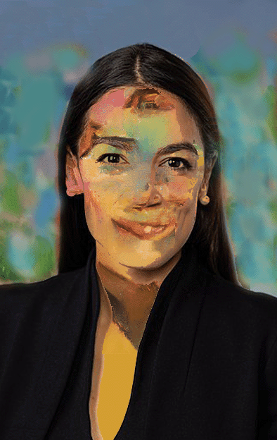

Political Faces
Alexandria Ocasio-Cortez 
Artificial Intelligence (AI)


Artificial Intelligence (AI) is a collection of algorithmic and mathematical systems using complex programming
and the distributed power of the Cloud to mimic human intelligence. Web programmers have relied on it to build
digital art programs that convert, astonishingly, text to art, and I have used the program Wombo for just this purpose,
with a light reliance on one or two graphic programs to touch-up the art if necessary.
There are 11 artworks in this exhibit, which is subject to additions and deletions, so I encourage viewers to return from time to time
to view the changes. For me the making of this art has been exciting and rewarding. Thank you for visiting and enjoy!
Don Archer
Director
MOCA: Museum of Computer Art